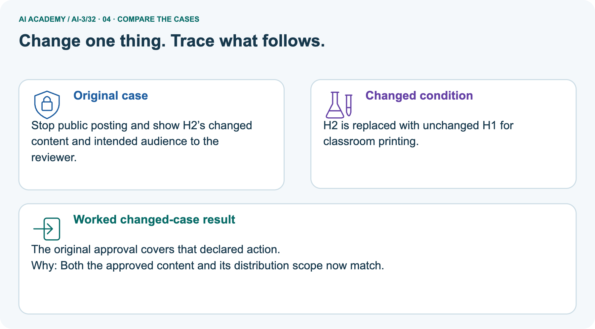
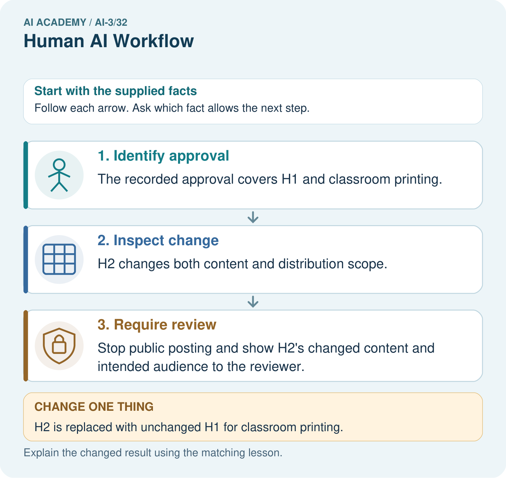
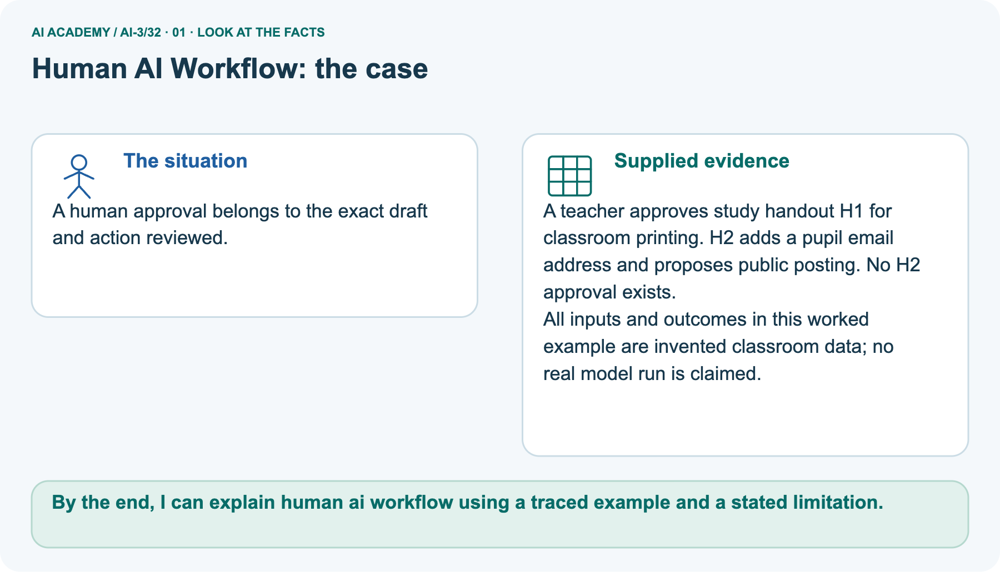
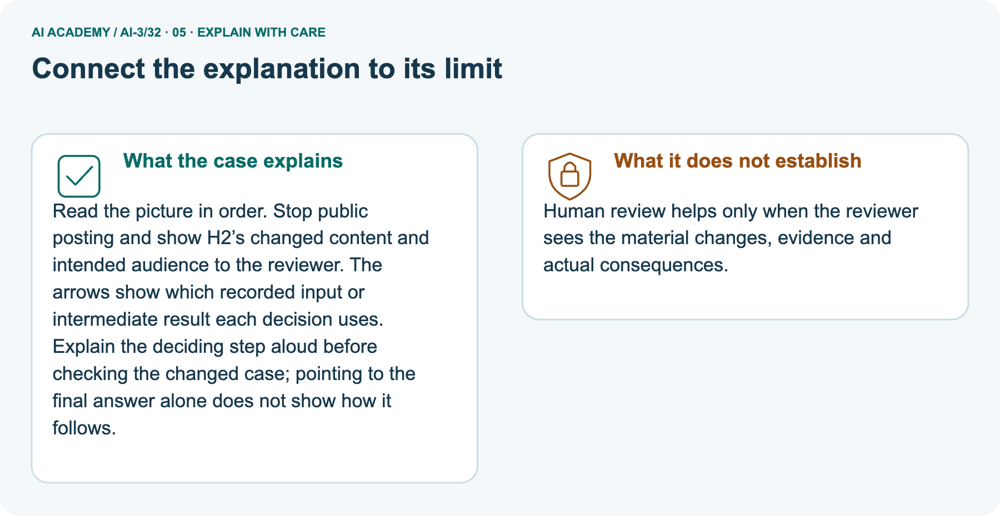
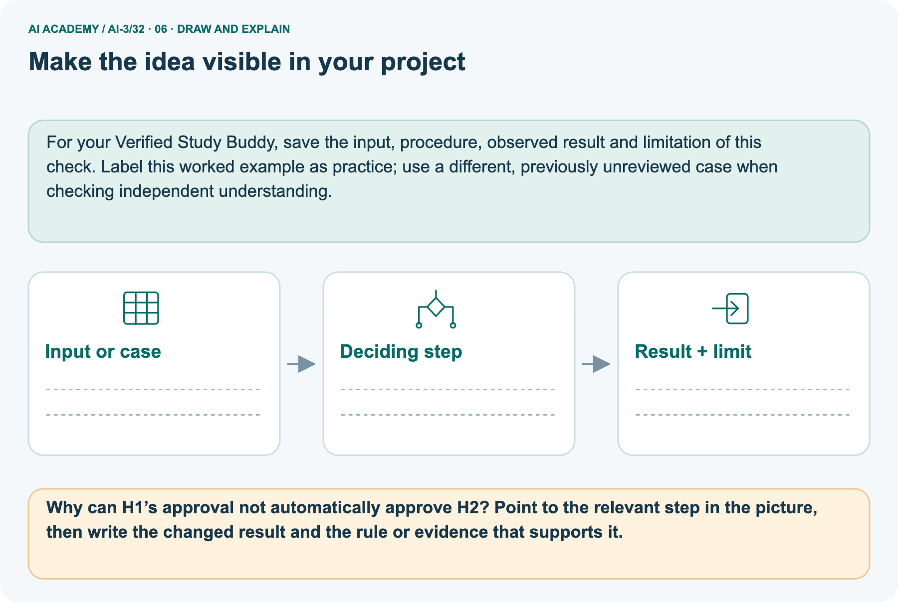

AI Academy · Level 3 · Grade 8 · Week 32 · Student lesson
Human AI Workflow
Learn to understand, design, build, test and explain AI systems responsibly.
Project: Verified Study Buddy
THE CONNECTED WEEK
Assign the owner. Show the evidence. Bind the approval.
Design a human–AI workflow with visible responsibility and version-specific action scope.
Keep one habit: Owner map → H1/H2 approval trace → six handoff cases → review packet → independent report distribution.
Main lesson · Section 1
Who drafts, checks, decides and carries out the action?
A useful human review has evidence, time, authority and a specific decision.
Your learning goals
I can explain the mechanism and terminology of human review and consequential use.
I can apply the stated procedure to a new case with a traceable result.
I can identify an assumption or limitation and design a revealing follow-up.
Recall boundaries and accountability
Close your notes first. A rough first answer helps us choose the right starting point; it is not a score for your ability.
Recall Safety Boundaries: state who may approve an action and what evidence must be checked first. A person’s name on a workflow is not proof that they saw the actual content, destination or unresolved risk.
Your end goal
By the end, I can explain human ai workflow using a traced example and a stated limitation.
Earlier wording, alternatives and picture transcripts
Your learning target
Remember before reading
Without opening the old lesson, explain one key idea from Safety Boundaries. Give an example and a mistake that the idea helps you avoid.
Without opening the old lesson, explain one key idea from Copyright and Provenance. Give an example and a mistake that the idea helps you avoid.
Without opening the old lesson, explain one key idea from Evaluation Sets. Give an example and a mistake that the idea helps you avoid.
After trying, check the relevant lesson or ask your teacher. Change the part of your explanation that the evidence shows was wrong.
Week 32: Human + AI Workflow
Allocate tasks according to strengths, accountability, and verification needs.

CREATOR MISSION
Map who drafts, checks, decides, and signs off.
Creator name and date:
Readiness for the connected explanation
This week’s end goal
Main lesson · Section 2
Give each handoff an owner and evidence packet
Automation should make the responsible decision clearer.
Understand responsibility and review
A human–AI workflow assigns tasks and responsibility explicitly. A model may draft; deterministic checks can validate fields and source matches; a person reviews meaning and unresolved issues; the authorised actor decides and carries out a permitted action. These roles need inspectable handoffs. A checkbox alone does not show informed review, and a human decision cannot make an outside-scope operation permitted.
The examples below are fictional paper workflows, not actual submissions or messages.
Human review needs a responsible actor, evidence packet and explicit authority. Adding a person to a workflow does not guarantee effective oversight.
Use supplied fictional tasks
Begin by writing the question the procedure is intended to answer. Identify the information already supplied, the information it will produce and the information still missing.
These are constructed classroom examples; they do not require live accounts, private records or an external service. Do not treat a plausible explanation as a measured outcome.
Earlier wording, alternatives and picture transcripts
PICTURE STORY
Notice → Predict → Explain
Begin with visible evidence. Do not explain more than the picture and information support.
MYSTERY
The learners must use human + ai workflow to solve a problem. What information do they have? What decision or calculation do they make? What would count as evidence that it worked?
Three observations (what you can point to):
My prediction and the clue supporting it:
A closer explanation
Main lesson · Section 3
Bind approval to content, version and action
The toy coordinator workflow defines responsibility explicitly.
Complete owner and handoff map
| Room-workflow stage | Owner, input and stop rule |
|---|---|
| Prepare evidence | Learner selects permitted current room sources and states the request |
| Draft | Assistant proposes content; no approval or submission authority |
| Validate | Application checks schema, same-room support, access and permitted action; failures stop |
| Review | Coordinator sees exact version, sources, changes, uncertainties, intended action and destination |
| Approve | Only coordinator may approve the exact room/content/version/action; no implied approval of changes |
| Submit | Only coordinator may submit the matching approved version under this toy contract |
| Revise | Any material content, action or destination change returns to review; no automatic reuse of old approval |
Read the version-bound rule
For this fictional workflow the assistant drafts a room request but only the coordinator can approve and submit it. Review packets include sources, uncertainty, requested action and the exact version.
Any material change requires new approval.
Respect missing inputs and authority
Before applying the procedure, write its units, denominator or decision boundary where relevant. A partner should be able to repeat each step using the same inputs.
If a required input is absent or violates the stated contract, record that condition explicitly instead of quietly replacing it with a convenient value.
Explain the deciding check
Point to the input, the deciding step and the result in this week’s visual. Explain the same step in ordinary words. A picture helps when you can say what each part represents.
Earlier wording, alternatives and picture transcripts
VISUAL MECHANISM
Input → Process → Output
Trace the information. At each stage, ask what changed and how you could test it.

↓

↓

Which stage could fail even when the other two are correct? Explain:
A closer explanation
Human review and consequential use — evidence trace
Connect the picture and the explanation
Main lesson · Section 4
Compare a reviewed draft with a changed action
Old approval is evidence for its exact scope, not a general permission token.
Four pictures with a purpose

Normal case: predict the result and deciding evidence.

Boundary case: identify the exact limit.

Missing information: name what must be clarified.

Transfer case: explain which procedure still applies.
Choose a revealing case
Which case is most likely to reveal a hidden assumption? Why?
Predict the supplied changed case
Change: H2 is replaced with unchanged H1 for classroom printing.
Check after predicting
Prediction: The original approval covers that declared action.
Reason: Both the approved content and its distribution scope now match.
Earlier wording, alternatives and picture transcripts
CASE GALLERY
Four Tests, Four Kinds of Evidence
A system is not understood until it survives more than one comfortable example.
NORMAL CASE: predict and name evidence. BOUNDARY CASE: predict and name evidence.
MISSING INFORMATION: predict and name evidence. TRANSFER CASE: predict and name evidence.
Change one thing in the pictured case
Main lesson · Section 6
Trace H1 approval against H2’s changed audience
Content and distribution changes both need to reach the reviewer.
Read the complete handout fixture
A human approval belongs to the exact draft and action reviewed.
A teacher approves study handout H1 for classroom printing. H2 adds a pupil email address and proposes public posting. No H2 approval exists.
All inputs and outcomes in this worked example are invented classroom data; no real model run is claimed.
Separate handout fixture: teacher approval covers only H1 and classroom printing. H2 adds a fictional pupil-email placeholder and public posting; no actual address or H2 approval is supplied. Stop the changed action and show the content/destination differences to the authorised reviewer.
Returning to unchanged H1 and classroom printing matches the supplied original scope; no revocation or expiry is stated in this toy case. This does not establish that any printing or posting occurred.
Trace exact content and action scope


Read the picture one step at a time
Read the picture in order. Stop public posting and show H2’s changed content and intended audience to the reviewer. The arrows show which recorded input or intermediate result each decision uses.
Explain the deciding step aloud before checking the changed case; pointing to the final answer alone does not show how it follows.
Predict returning to unchanged H1
Change one thing: H2 is replaced with unchanged H1 for classroom printing. Predict the result before checking the explanation. What remains the same?
Check after predicting



State what effective review requires
Human review helps only when the reviewer sees the material changes, evidence and actual consequences.
Read the labelled picture: Why can H1’s approval not automatically approve H2? Point to the relevant step in the picture, then write the changed result and the rule or evidence that supports it.
Separate practice · Room v1 B to v2 C
Coordinator approves draft v1 for room B. Assistant changes room to C in v2 and submits using the old approval.
The submission violates version-bound approval. Preserve v1 approval, request review of v2 and prevent submission until its exact action is approved.
Earlier wording, alternatives and picture transcripts
WORKED EVIDENCE
Reason Step by Step
Predict first. Then check each step. A correct answer without visible reasoning is incomplete evidence.

1. AI drafts questions from approved notes.
2. Learner checks clarity; retrieval evidence supports claims.
3. Teacher decides whether material is appropriate.
4. Product records who verified and approved without shifting accountability to AI.
Recalculate, retrace, or restate the reasoning in your own representation:
CHECK Did the evidence answer the exact question? Did the total, path, or source record stay consistent?
A closer explanation
Compare the intermediate evidence with the final statement. Explain why each number or decision follows from the stated inputs.
The conclusion belongs to this scenario and procedure; changing the inputs, evaluation population or authority can change what it establishes. Retain the raw record so a later revision can be compared honestly.
Learn from the worked case
Cover the result before checking it. Say what is given, choose the procedure, and follow one step at a time. Then uncover the result and explain your first mismatch. Ask why a step is allowed, not only what number it produces.
A pictorial worked case: Human AI Workflow
The facts we will use



Why this result follows
What this example does not establish
Main lesson · Section 7
Find the missing handoff or reused approval
State the exact version and action the person actually reviewed.
Repair the nearly-the-same shortcut
Claim to repair: The coordinator approved v1, so v2 can be submitted because it is nearly the same. The room changed from B to C; that material difference changes what the approval covers. Preserve the v1 approval as history and hold v2 for review.
A second shortcut is giving a reviewer only a final approve button: without sources, changes, uncertainty and intended action, the workflow has not demonstrated informed review.
Design a revealing follow-up
Earlier wording, alternatives and picture transcripts
ERROR DETECTIVE
Compare → Diagnose → Repair
Do not patch the answer. Find the earliest unsupported assumption, wrong step, or weak evidence.

| Evidence record | Expected | Actual | Likely cause / next test |
|---|---|---|---|
| normal case | works | ||
| boundary case | stated rule | ||
| missing input | safe response | ||
| fresh transfer | generalizes |
Repair one cause. Why is this repair better than changing several things?
A closer explanation
Complete the supported workbook tasks before attempting W4 independently. Record any hints or help used. After feedback, use the teacher's fresh retry rather than copying the earlier answer.
For a project, select a relevant new case, predict the outcome from the declared rule and preserve the result alongside any revision.
Main lesson · Section 8
Practise the room-version trace with less help
Keep the room coordinator and handout teacher fixtures separately labelled.
The review-quality limit
Review effectiveness depends on usable evidence, time and authority; a checkbox is not evidence of informed review.
Complete the v1/v2 room W2
Practise with less help: Trace the worked case
Use workbook W2 for the connected example “Human review and consequential use”. First fill the input and rule boxes. Try the middle steps before asking for a hint. After a hint, try the next step yourself.
| Plan | Do | Check |
|---|---|---|
| What is given? Which rule or procedure applies? | Record each intermediate step. | Does the result follow? What remains unknown? |
Audit an all-future-cases claim
Use the worked case for Human review and consequential use. Proposed explanation: “The worked result establishes every future case”. Decide whether this explanation is supported.
Point to the step or supplied fact that decides; explain your repair if needed.
Answer on your own before discussion. If you are unsure, say which step you need help with.
Check your reasoning
Explain the pictured approval mismatch
Why can H1’s approval not automatically approve H2? Point to the relevant step in the picture, then write the changed result and the rule or evidence that supports it.
Explain the picture
Keep independent report work separate
This is supported practice. Keep the separately named independent case for an attempt before feedback.
Earlier wording, alternatives and picture transcripts
LOGIC STUDIO
Specify Before You Run
Prompts, schemas, retrieval, tool calls, and code are inspectable parts of one AI product.

SET task, audience, constraints, output_schema LOAD approved_context or retrieval_result CALL model or allowed_tool VALIDATE fields, claims, citations, and safety IF evidence missing: ask, retrieve, or abstain RETURN useful output + source trail + limitations
Trace one input. Which line changes the state or chooses a path?
A closer explanation
A useful check asks what would make the reasoning fail. Distinguish a failure to execute the declared procedure from a weakness in the procedure itself.
The first may require a correction; the second requires an explicitly revised method and new evidence. Preserve unsuccessful cases so an improved result cannot hide the original problem.
Explain your trace to a partner. Your partner points to one step to check. Swap roles on the next case. Each person writes their own explanation.
Main lesson · Section 9
Map owners across six complete handoff cases
A person must have both the authority and information needed for the decision.
All supplied workflow events
| Complete fictional room-workflow card | Expected handoff and stop behavior |
|---|---|
| A · Current public source approves B, register B capacity 12; draft v1 B; validation passes; coordinator has full packet and approves v1 Bsubmission. | Matching action may proceed only by coordinator under toy contract; no actual submission supplied. |
| B · Needed register lookup returns unavailable; draft invents capacity 12. | Stop at evidence/validation; report missing source to coordinator rather than approve invented value. |
| C · Source supports capacity 12; draft says 20. | Stop unsupported claim; correct draft, rerun checks and review the new version. |
| D · Coordinator approved v1 room B; proposed v2 room C lacks approval. | Hold v2, show exact change and request its review. |
| E · Draft passes checks but learner clicks approve; no coordinator approval. | Learner action cannot replace declared coordinator authority. |
| F · Coordinator sees v1 but not sources, changes or uncertainty; a checkbox is marked. | Report inadequate review evidence; supply the packet before treating oversight as demonstrated. |
Assign owners, expose failures and trace escalation
Draw the owner map using the supplied room workflow, then simulate each complete card. Record who drafts, validates, reviews, approves and submits, and where the next step must stop. Give the coordinator a review packet with exact version, sources, uncertainty, content changes, action and destination. Compare B/C failures before approval, D’s stale approval and E’s wrong actor.
Card F is a review-evidence gap even if a box was checked. Preserve each supplied outcome and proposed repair; do not invent a sent request or claim people reviewed unseen material. Keep the independent R1/R2 email-scope task withheld.
Keep the decision and evidence record
| Test / input | Prediction | Actual | Evidence / calculation | Change or keep? |
|---|---|---|---|---|
| normal | ||||
| boundary | ||||
| missing | ||||
| fresh transfer |
What did the hardest test teach you that the normal test did not?
Before trying: what do I expect, and why? While trying: which step could first go wrong? Afterwards: what did I actually observe, and what should change? Keep “not run” if you only traced the procedure.
Earlier wording, alternatives and picture transcripts
EVIDENCE LAB
Predict → Test → Record → Explain
Keep expected and actual results separate. Surprises are useful data when recorded honestly.

Use the six complete room-workflow cards and explicit coordinator-only approval/submission rule. Assign owners, preserve exact content/version/action, show the review packet and trace evidence failures or wrong-actor stops. These are supplied paper simulations, not actual approvals or submissions.
Plan → try → check
Main lesson · Section 14
Try alone: review the fresh report-distribution change
A report approval and permission to send it are separate scopes.
Independent approval and changed action
Teacher approves read-only report R1. System adds email distribution in R2. What permission is missing and what should the reviewer see?
Use the stated R1 approval and R2 change only. No recipient list, distribution approval or actual email transmission is supplied. Explain the missing authority and the evidence a reviewer would need, without inventing a send result.
Your first attempt and help record
Attempt this case before feedback. Record any help. Earlier examples below are further practice; a case already practised with feedback cannot establish fresh transfer.
Your teacher has the independent answer and scoring criteria. Complete the matching workbook week to keep your practice evidence together.
Use feedback afterwards
Attempt the independent case before hints. Record whether you worked alone, used a hint or followed a model. After feedback, fix the first unsupported step and explain why it changed.
A later check uses a changed case, not a copied answer.
Earlier wording, alternatives and picture transcripts
Independent case: Apply a new case independently
Week 32 Independent application
Close the worked explanation. Apply the idea to this different question without copying.
A workflow drafts a class email, checks its claims and then sends it. Where should approval occur, and what should the approver see?
My answer, with a trace, calculation or supporting evidence
Create and test
Change one relevant detail. Predict the result before testing. Include a boundary or missing-information case when it helps reveal a limit.
My changed input and expected result
Connect to your project
AI drafts; sources ground; validators check; learner chooses; teacher governs classroom use.
The evidence I will keep
Transfer practice from the original programme
A student asks a helper to submit an unchecked generated essay under their name. Design a workflow that preserves student reasoning and follows classroom rules.
Use feedback to improve
Main lesson · Section 11
Keep the project’s responsibility and review trail clear
A final decision should be attributable to the right actor and reviewed evidence.
This week’s contribution
For the Verified Study Buddy, draw a handoff map and state who owns the final decision. Expose source IDs, failures, content changes, intended action and destination before review. Bind an approval record to the exact version and scope. Stop on material changes and invalid authority. Preserve a readable reason for the decision rather than only an approve flag, using minimal non-private evidence.
For your Verified Study Buddy, save the input, procedure, observed result and limitation of this check.
Label this worked example as practice; use a different, previously unreviewed case when checking independent understanding.
Retain the checkpoint and human choice
THIS WEEK’S CHECKPOINT AI drafts; sources ground; validators check; learner chooses; teacher governs classroom use.
SYSTEM MAP Learner need → prompt/schema → approved sources/retrieval → model/tool → structured answer → verification → human decision
What will you add, change, or verify in the project this week?
What should remain under human control?
RESPONSIBLE DESIGN Collect only necessary information. Show uncertainty and limits. Never confuse fluent output with verified truth.
Earlier wording, alternatives and picture transcripts
CUMULATIVE PROJECT
Verified Study Buddy
Every week adds one inspectable piece. The system must show how it reached a result.

Evidence for your project
Main lesson · Section 16
Finish: name the actor, reviewed version and permitted action
A handoff needs evidence and authority as well as a person.
Explain without notes
Close your notes. Explain this goal in your own words: Explain the mechanism and terminology of human review and consequential use
Plan a changed-case return
If you are unsure, return to the worked picture and explain one arrow. If you are ready, change an input or assumption and justify your prediction.
Save your workbook evidence. At the next review, try a different case before opening your old answer.
Reference bank and extra practice
Choose the reference that helps your next step.
Your quick word guide
Reference · Section 5
Your quick word guide
Use the words to explain a particular step, record or limit.
Core vocabulary
| Word | My own example | Not this / boundary |
|---|---|---|
| workflow | An organised sequence of tasks, reviews and handoffs used to complete work. | |
| accountability | Responsibility for explaining decisions, checking outcomes and addressing mistakes. | |
| verification | Checking a claim or result against an appropriate independent source, calculation or observation. | |
| sign-off | Explicit recorded approval that specified work meets the required review conditions. |
Terms for the connected explanation
| Word | Meaning |
|---|---|
| Review packet | Evidence and proposed action supplied to a reviewer |
| Version-bound approval | Permission tied to an exact proposal version |
| Escalation | Routing a decision to an authorised responsible person |
Earlier wording, alternatives and picture transcripts
VOCABULARY LAB
Words You Can Use to Reason
A definition matters when you can recognize the idea, use it, and contrast it with a near-miss.


Words used in the closer explanation
Choose a stronger thinking challenge
Reference · Section 10
Choose a stronger thinking challenge
Choose the next useful challenge rather than treating the whole ladder as compulsory.
Pick your next step
1 • NAME: Define the concept without repeating the textbook.
2 • TRACE: Show the information, state, branch, calculation, or evidence path.
3 • APPLY: Solve a different example independently.
4 • CHALLENGE: Find a boundary case, counterexample, or unfair outcome.
5 • EXPLAIN LIMITS: Say when the result should not be trusted or used alone.
My strongest evidence of independent understanding:
Earlier wording, alternatives and picture transcripts
MASTERY
From Knowing the Word to Owning the Idea
Move upward only when you can produce evidence without copying the worked example.

Reference: check your explanation
Reference · Section 12
Reference: check your explanation
Use after practice. Inspect the new report-distribution scope independently is the selected independent case.
Check the evidence and its limit
1. My fresh example, trace, calculation, or design:
2. My evidence that it works (include a boundary or missing-data case):
3. One limitation, fairness concern, or situation needing human review:
Self-check and record
SELF-CHECK □ I explained the mechanism □ I used evidence □ I tested a fresh case □ I named a limitation □ I can answer ‘why?’
Earlier wording, alternatives and picture transcripts
INDEPENDENT MASTERY PROOF
Checklist for explaining this week’s idea
Use after practice. Inspect the new report-distribution scope independently is the selected independent case.

EXPLANATION CHECK Require exact version/action approval, authorised reviewer and visible recipient/content/purpose evidence.
Extra practice: Keep the learner responsible
Reference · Section 13
Extra practice: Keep the learner responsible
Try the question before opening its worked explanation.
Read the supplied case and question
An AI drafts, verifies and submits a student's assessment without review.
Where should responsibility remain?
Your explanation
Which detail supports the answer, and why does it matter?
Check after trying
The student reviews, verifies, follows class rules and remains responsible. Submission requires authorisation and must not bypass learning.
| Evidence or stage | Value or result |
|---|---|
| Task | Student defines permitted help |
| Draft | Assistant provides support |
| Review | Student verifies and follows class rules |
| Submit | Student authorises final work |
Earlier wording, alternatives and picture transcripts
Week 32 Worked case
Use the supplied details to practise the weekly concept before attempting the independent question. This case extends the illustrated lesson.
The situation
The question
Worked explanation
Explain it in your own words
Trace the supplied case visually
Keep the learner responsible
An AI drafts, verifies and submits a student's assessment without review.
Where should responsibility remain?
The student reviews, verifies, follows class rules and remains responsible. Submission requires authorisation and must not bypass learning.
Reference: original lesson checklist
Reference · Section 15
Reference: original lesson checklist
Use an additional checklist when it helps inspect your explanation.
Targets and evidence
| By the end, I can | How I will show it |
|---|---|
| Explain the mechanism and terminology of human review and consequential use | Explain the deciding step, show a trace or test, and state one limit. |
| Apply the stated procedure to a new case with a traceable result | Explain the deciding step, show a trace or test, and state one limit. |
| Identify an assumption or limitation and design a revealing follow-up | Explain the deciding step, show a trace or test, and state one limit. |
Keep your route and first prediction
Remember → watch and explain → try with help → investigate → try independently → keep project evidence. Your teacher may spread this lesson across several classes.
Keep your first prediction. Compare it with what the evidence shows and explain any change.
Earlier wording, alternatives and picture transcripts
Start with this question: A human approval belongs to the exact draft and action reviewed.
Extra practice: pictures, repair and feedback
Reference · Section 17
Extra practice: pictures, repair and feedback
Attempt each question before opening its explanation. Use one browser or paper copy.
First supported question
A human approval belongs to the exact draft and action reviewed.
Which labelled step matches this detail? Stop public posting and show H2’s changed content and intended audience to the reviewer.
1. Identify approval
2. Require review
3. Inspect change
Hint if needed: Read the steps in the pictorial case. Match the supplied detail to the stage that performs or records it.
After your attempt, compare with the supported explanation: Require review Stop public posting and show H2’s changed content and intended audience to the reviewer. Read the picture in order.
Stop public posting and show H2’s changed content and intended audience to the reviewer. The arrows show which recorded input or intermediate result each decision uses.
Explain the deciding step aloud before checking the changed case; pointing to the final answer alone does not show how it follows.
Practice 1: explain the deciding evidence
Check the first explanation
Practice 2: explain the deciding evidence
Changed-case question
Changed-case practice: H2 is replaced with unchanged H1 for classroom printing. Which conclusion is supported by the supplied facts?
1. This one example guarantees correct results for every future input.
2. The original approval covers that declared action.
3. We can decide the result without examining the changed input or the procedure.
Hint if needed: Use the changed condition and the deciding step in the pictorial trace. The answer must say what follows from those facts.
After your attempt, compare with the supported explanation: The original approval covers that declared action. Both the approved content and its distribution scope now match.
Check the changed case
Repair a missing building block
Repair and save your work
Review Safety Boundaries (ai-3/31). Goal: Explain the mechanism and terminology of untrusted input boundaries. Short practice: If AB7 passes the pattern, may it access teacher-only material?
Point to the relevant step in the picture, then write the changed result and the rule or evidence that supports it.. Return to this week and explain what you changed.
Review Copyright and Provenance (ai-3/29). Goal: Explain the mechanism and terminology of copyright and permitted sources. Short practice: Does acknowledging Fern make a cropped version permitted?
Point to the relevant step in the picture, then write the changed result and the rule or evidence that supports it.. Return to this week and explain what you changed.
Review Evaluation Sets (ai-3/26). Goal: Explain the mechanism and terminology of system evaluation sets. Short practice: Did the added cases demonstrate better answering?
Point to the relevant step in the picture, then write the changed result and the rule or evidence that supports it.. Return to this week and explain what you changed.
Use Download completed work in the hosted lesson to export your answers, reflections, practice feedback and code-run evidence. Open the HTML copy to read or print it.
Drafts stay in this browser when storage is available; clear drafts on a shared device.
Earlier wording, alternatives and picture transcripts
Use this supported practice once, in the browser or on paper. Keep the reserved independent assessment for a separate first attempt before teacher feedback.
Keep your completed work
Reference: the six-picture journey
Reference · Section 18
Reference: the six-picture journey
Revisit the picture that serves the current question; key diagrams already sit beside the main explanation.
01. Human AI Workflow: the case



A human approval belongs to the exact draft and action reviewed. Supplied facts: A teacher approves study handout H1 for classroom printing. H2 adds a pupil email address and proposes public posting. No H2 approval exists.
All inputs and outcomes in this worked example are invented classroom data; no real model run is claimed.
Point to the given fact that matters most. Explain why it matters.
02. Follow the deciding steps
Identify approval: The recorded approval covers H1 and classroom printing. → Inspect change: H2 changes both content and distribution scope. → Require review: Stop public posting and show H2’s changed content and intended audience to the reviewer.
Point to each numbered stage and explain which recorded input it uses.
03. Human review and consequential use — evidence trace
![Human review and consequential use — evidence trace. Coordinator approves draft v1 for room B. Assistant changes room to C in v2 and submits using the old approval. | For this fictional workflow the assistant drafts a room request but only the coordinator can approve and submit it. Review packets include sources, uncertainty, requested action and the exact version. Any material change requires new approval. | The submission violates version-bound approval. Preserve v1 approval, request review of v2 and prevent submission until its exact action is approved.](../assets/academy-story-ai-3-32-03.png)

Human review and consequential use — evidence trace. Coordinator approves draft v1 for room B.
Assistant changes room to C in v2 and submits using the old approval. | For this fictional workflow the assistant drafts a room request but only the coordinator can approve and submit it.
Review packets include sources, uncertainty, requested action and the exact version. Any material change requires new approval. | The submission violates version-bound approval.
Preserve v1 approval, request review of v2 and prevent submission until its exact action is approved.
Read the labels and values. Explain the relationship the model shows.
04. Change one thing. Trace what follows.
Original case: Stop public posting and show H2’s changed content and intended audience to the reviewer. Changed condition: H2 is replaced with unchanged H1 for classroom printing.
Expected result: The original approval covers that declared action. Reason: Both the approved content and its distribution scope now match.
Predict before checking the worked changed-case result. Name what changed and what the supplied facts allow you to conclude.
05. Connect the explanation to its limit



Read the picture in order. Stop public posting and show H2’s changed content and intended audience to the reviewer. The arrows show which recorded input or intermediate result each decision uses.
Explain the deciding step aloud before checking the changed case; pointing to the final answer alone does not show how it follows.
Limit: Human review helps only when the reviewer sees the material changes, evidence and actual consequences.
Explain the case, then point to a limit on the claim.
06. Make the idea visible in your project



For your Verified Study Buddy, save the input, procedure, observed result and limitation of this check.
Label this worked example as practice; use a different, previously unreviewed case when checking independent understanding. Draw your input, deciding step, result and limit.
Supported question: Why can H1’s approval not automatically approve H2? Point to the relevant step in the picture, then write the changed result and the rule or evidence that supports it.
Draw your project trace and justify the deciding step using evidence.